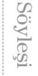

Zülfü Livaneli’ye Son Ada için sorular

Son Ada’nın anlatıcısı, adını kendisinin koyduğu bu yeri “son sığınak, son insani köşe” olarak niteliyor. Anlattığı, nerdeyse bir ütopya: “Herkes elinden geldiği kadarını, içinden geldiği kadarını yapıyordu.” Ancak bu durum uzun sürmüyor; ütopya olarak başlayan roman tam bir distopyaya dönüşüyor. Ada’yı Dünya’ya genişletirsek, bu durum evrensel ve kaçınılmaz mı sizce?
Son Ada, belli bir ülkeyi anlatmamasına karşın, belki de benim en politik romanım. Türkiye ve dünya hakkında düşündüklerimi, ıssız bir adada yaşayan insanlar, martılar ve bir diktatör ekseninde yazıya dökmeyi yeğledim. Çünkü milyonlarca haber ayrıntısı içinde kaybolan, gözden kaçırılan gerçeği, uzaklaştırarak, yabancılaştırarak daha kolay anlatabileceğimi düşündüm. İnsanlar yönlendirilmiş bir haber bombardımanı altında gerçeği yalandan, eğriyi doğrudan ayırt etmekte güçlük çekiyor. Zaten büyük kitleler dünü unutur, yarını ise düşünmez, sadece anı yaşarlar. Bu “an” ise iktidarların ve medyanın manipülasyonları ile oluştuğu için genellikle yanlış yorumlanır.
Romanda Başkan’ın ada toplumunu “anarşi”den kurtarmaya ağaçlıklı yolu “park ve bahçe geleneklerine göre düzenlenmiş” bir hale getirerek başlaması, akla yerel yönetimlerin yeşil alan anlayışlarındaki yaygın yanlışları ve dolaylı da olsa Gezi Parkı olaylarını getiriyor. Bir kez daha hayat sanatı taklit ediyor sanki! Çevre konusundaki hassasiyeti bilinen bir yazar ve sanatçı olarak, ne dersiniz?
Hayatın sanatı taklit ettiği görüşüne giderek daha da çok Söyleşi inanır oldum. Gerçekten de, beş yıl önce yayımlanmış olan Son Ada, sanki Gezi direnişi ile bire bir örtüşüyor. Demek ki hayata doğru bakmayı becerebildiğinizde, sanat yoluyla zaman ve mekân dışı bir boyuta geçebiliyorsunuz. Dünya ve Türkiye edebiyatı, buna benzer birçok örnekle dolu. Gezi olaylarını anında anlatmak gazeteciliğin, olup bittikten sonra yorumlamak sosyolojinin ve tarihin, öngörülerle anlatmak ise sanatın işi.
Başkan’ın Son Ada’yı “kurul”lar eliyle yönetmeye başlaması, başlangıçta hiç de dikkat çekmeyen, işlerin nasıl vahim bir hal alacağının ipuçlarını vermeyen bir gelişme: “Olup bitenin hepsi bir tiyatroydu...” Tarih boyu hemen bütün faşist yönetimlerin ilk icraatları nerdeyse oyun gibi izlenmiş gelecekteki mağdurları tarafından. Bu oyunların günümüzde de sahnelendiğini söyleyebilir miyiz?
1970’lerde seslendirdiğim, Mesleki Baba’ya ait bir deyişte şair “Mesleki’m, artar eksilmez / Zulüm yavaşça yavaşça” der. Bu harika dizelerdeki “yavaşça” saptaması çok önemli. Çünkü her diktatörlük, başlangıçta kendi çıkarını toplumun çıkarı gibi göstermeye dikkat eder. Başlangıçta kimseyi ürkütmemeye çalışır. Sonra gücü ve kendine güveni arttıkça, dişlerini “yavaşça” göstermeye başlar. Elbette bu saptama Fransız Devrimi gibi şiddetli altüst oluşlar için değil, sözüm ona “demokratik” yollarla iktidara gelen “seçilmiş krallar” için geçerlidir.
Romanın en önemli vurgularından biri de, faşizmin pekâlâ demokratik yollarla gelmiş bir çoğunluk iktidarı da olabileceği üzerinde. Buna bağlı olan bir şey de, demokrasinin aslında ne kadar aldatıcı bir kavram olabildiğinin çok acı sonuçlarıyla yaşanması: “...bu adadaki bütün kararlar demokrasiye uygun olarak alındı. Çoğunluğun oyları neyi işaret ediyorsa onu yaptık.” Tanıdık bir ses “Çoğunluk haklıdır” diyor tam burada! Siz ne dersiniz peki?
70’li yıllarda Cumhuriyet gazetesinde, kısa cevaplar verilmesi koşuluyla söyleşiler yapılıyordu. Böyle bir söyleşide bana yöneltilen “Demokrasi” sorusuna “Çoğunluk diktatörlüğü” yanıtını vermiştim ve epey tartışılmıştı bu kavram. O dönemler “demokrasi” sözcüğü çok yüceltilirdi, benim bu tanımım ise pek çok kişinin hoşuna gitmemişti. Oysa Maurice Duverger de böyle tanımlar demokrasiyi. Elbette bu tanım, gerçek ve ideal demokrasiyi değil, bu maske arkasında oynanan zalim bir oyunu anlatmak için seçilmişti. Bir rejimin kelimenin tam anlamıyla demokrat olabilmesi için, çoğunluğa değil çoğulculuğa dayanması ve erkler ayrımını eksiksiz uygulaması gerekir. Şimdi bu kavramlar –yaşamakta olduğumuz acı deneyimlerle– daha iyi anlaşılır oldu. Mesela, yargının acınacak hale geldiği bir rejimde, iktidarı kim denetleyebilir ki!
Diktatörün ikilemi: Yönetimini sürdürebilmek için seçtiği baskıcı yöntemlerle, tabii ki istemeden, nerdeyse kendisine dönük bir “silahlı propaganda” yöntemiyle, kendi kuyusunu kazıyor: “Başımıza gelenler bizi o kadar şaşırtmıştı ki doğru dürüst düşünemiyorduk bile. Sadece bir şeyin farkındaydık, martılara kızmak aklımıza bile gelmiyordu. Buna karşılık bu dertleri başımıza açan Başkan’a duyduğumuz nefret artıyordu.” Yazarken üstünde durmuş muydunuz bu benzerliğin?
İktidar oyununun kaçınılmaz sonucu olarak bir güç zehirlenmesi yaşanıyor. Diktatörler, emirleri altındaki silahlı insanlara güvenerek büyük kitleleri “yola getirecekleri”ni sanma hatasına düşüyorlar. Oysa tarih, bunun mümkün olmadığını gösteren örneklerle dolu. Ne var ki –Mussolini gibi– her diktatör kendi bacağından asılıyor; bu sembolik asılışa kadar da uğraşmaya devam ediyor. Romanı yazarken aklımda askeri diktatörlükler ve Kürt meselesi vardı ama daha sonra başka benzerlikler ortaya çıktı. Sanki romanı okumuş olan birisi onu uygulamaya çalışıyor gibi garip bir durum.
Son Ada herkesin kaybettiği, sadece martıların “karşı koydukları ve uzlaşmadıkları için” kazandığı karanlık bir ortamda geleceğe dönük bir umutla biterken, anlatıcı “Daha o ağaçlar kesildiği, bakkalın masum oğlu dövüldüğü zaman ses çıkarmalı, başkaldırmalıydık” diye hayıflanıyor. Yazar’ın dediği gibi, “Bir yerde kötülük varsa, oradaki herkes biraz suçludur” diyebiliriz yani. “Gezi Ruhu”ndan söz etmeye başladığımız bugünlerde, umudunuz biraz olsun arttı mı?
Bu tezlere sonuna kadar katılıyorum. Kötülük baş gösterirken ona karşı koymayan herkes suçun bir parçası haline gelir. “Yavaşça” mevzi kazanan diktatörlüklere en başta “Hayır” demek gerekir. Başkaldıran insan bunun için soyludur. Evet, martılar direndikleri için kazanıyorlar, ama onların verdiği kayıp da az buz değil. Roman, toplumun ve doğanın kendi dengelerini bulacağı, daha doğrusu bulması gerektiği üzerinde yoğunlaşıyor. Eğer bu dengelere müdahale etmeye kalkarsanız, sonuç felakete varıyor; hem doğa mahvoluyor hem insan. Bu cinayet bazen açıkça diktatörlük biçiminde işleniyor, bazen de “demokrasi” kandırmacası arkasına saklanarak. Tek kişinin iradesi, kurullar, meclisler, komisyonlar vs. arkasına saklanarak sanki dev bir mekanizma çalışıyormuş görüntüsü veriliyor. Oysa onların hepsi dekor. Kararlar tek bir kişiden çıkıyor. O tek kişi ise zamanla güç yozlaşmasına uğrayarak Tanrı’nın kendisini dünyayı yönetmek için yarattığına inanmaya başlıyor; doğaya ve topluma egemen olmaya çalışıyor. Hatta bunu en doğal hakkı olarak görüyor, karşı çıkanlara ise sinirleniyor, samimi olarak öfkeleniyor. Toplumun sesini yükseltmesini “Ayakların baş olması” biçiminde yorumluyor.
Doğrusu romanı yazarken daha umutsuzdum ama, Gezi direnişi birçok kişi gibi benim de içime su serpti. Bu örgütsüz, spontane hareket, insanın tükenmeyeceğinin kanıtı gibi geldi bana. O tarihi günleri genç arkadaşlarla birlikte yaşama şansı bulduğum için mutluyum.